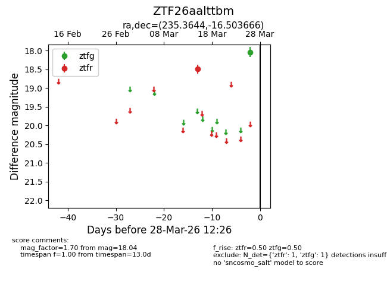
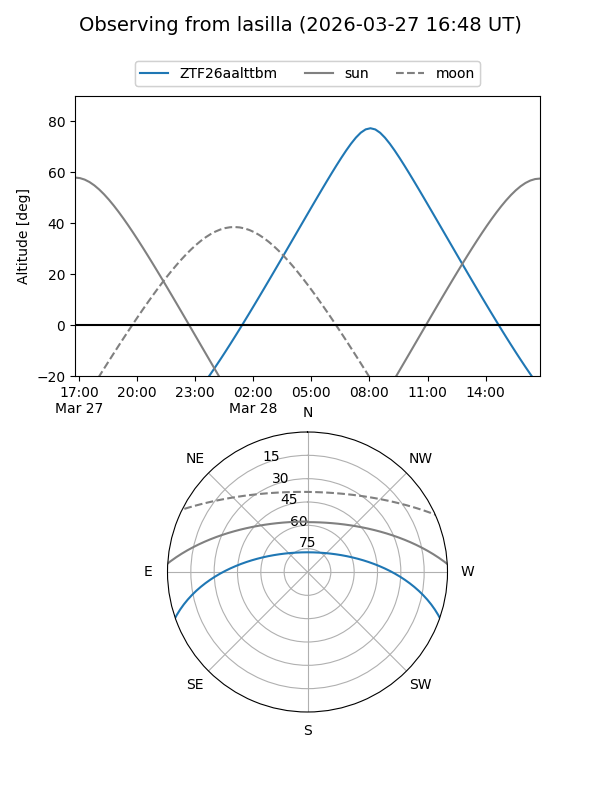
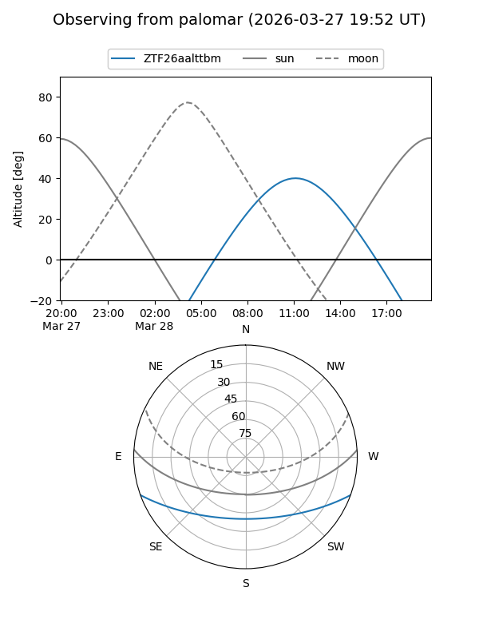

ZTF26aalttbm
Target ZTF26aalttbm at 2026-03-28 12:30
Aliases and brokers:
FINK: link
Lasair: link
ALeRCE: link
alt names
ZTF26aalttbm (ztf,fink_ztf)
Coordinates:
equatorial (ra, dec) = 235.3644,-16.50367
equatorial (HMS+DMS) = 15:41:27.46,-16:30:13.20
galactic (l, b) = (351.3331,+29.97030)
Flags:
Photometry:
last ztfg=18.04, ztfr=18.50
1 ztfg, 1 ztfr detections
Lightcurve

Visibility


Additional plots